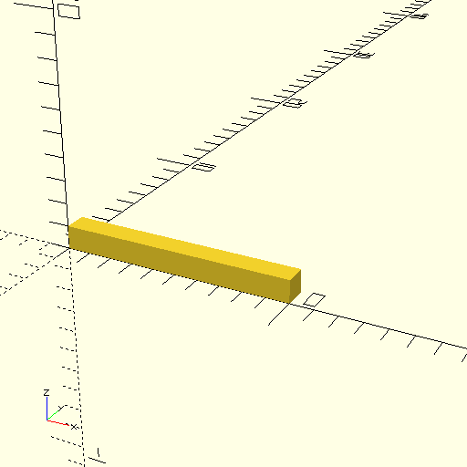
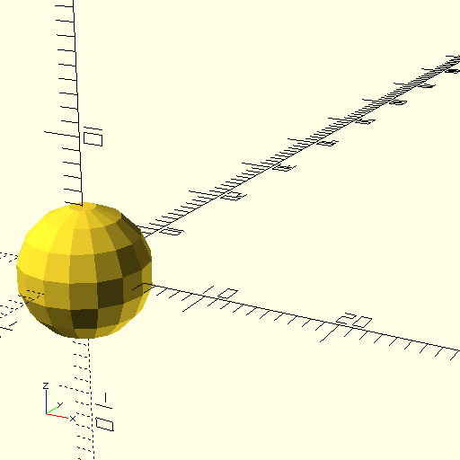
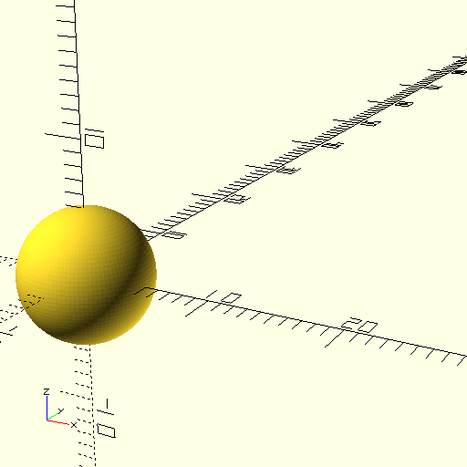
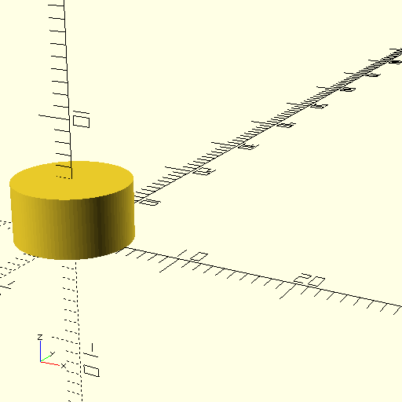
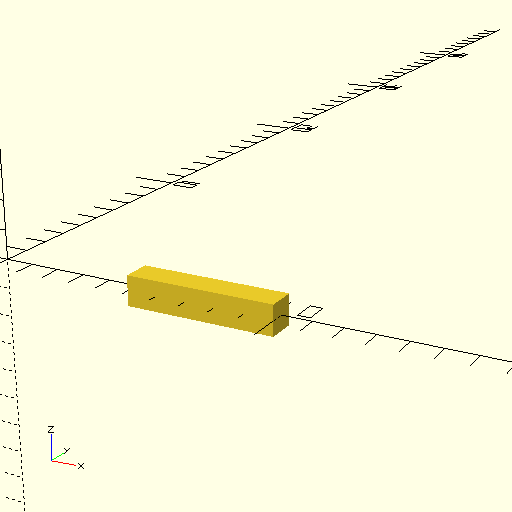
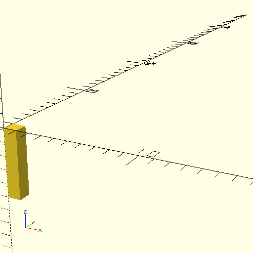
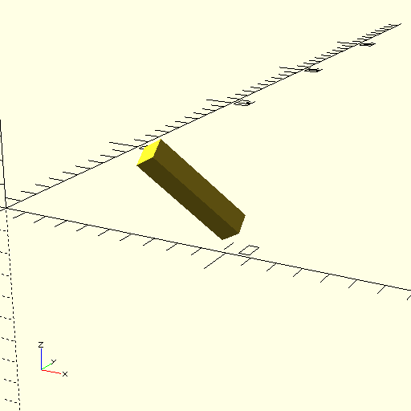
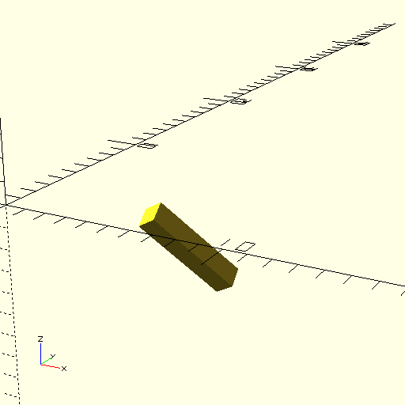

Read time: 8.3 minutes (834 words)
OpenSCAD¶
OpenSCAD is a 3D model design tool that is driven by a simple programming language. It supports something called “Constructive solid Geometry” which means that you form models using a small set of basic 3D shapes, then combine them with a few simple operations to form more complex shapes.
Even for non-programmers, it is pretty easy to use this tool, so easy that even elementary school kids have used it successfully!
Primitive Shapes¶
Cubes¶
Here is a simple example of an OpenSCAD “program showing what OpenSCAD calls a “cube”:
cube([10,1,1]);
Looks simple enough, although why we need both parentheses and square brackets is a topic to be discussed later.
Here is the result of running this code in OpenSCAD:
The “cube” is not a simple cube. Maybe the shape should be named “box”.
Coordinate System¶
Look at the lower left area in this image. You will see a set of axes labeled x, y, and z. This is the coordinate system OpenSCAD uses for defining and displaying models. In the command we used to generate this”cube” we set in three values inside of square brackets. These three values set the size of the “cube” in the x, y, and z directions. As seen in this image, the resulting model is 10 units long and one unit high and deep. We also see that the corner of the cube is located at the origin. This will be important later when we need to position shapes to create more complex models.
When we need to specify a triple of numbers for a variety of purposes, we surround them with square brackets and separate the values with commas.
Spheres¶
Next, we need to display a simple sphere:
sphere(r=5)
Here, we specify the radius, 5 units in this case. Let’s see what we get:
This sphere is a little “boxy”. We can cure that by adding a special line that tells the program to use more segments in building round things. Here is the modification:
$fn=100;
sphere(r=5)
That additional line is only needed once in the file, and we usually place it at the top.
Now we should see a nicer sphere:
Much better.
If you look closely at the sphere, you see that the center is at the origin. Again, this will be important as we position things.
Cylinders¶
There is another basic shape we can use, the cylinder:
$fn=100;
cylinder(r=5,h=5);
And here is the result:
As you might expect, r is the radius of the cylinder, and h( is the height. Notice that the cylinder axis is aligned with the z axis. The bottom of the cylinder is sitting on the x-y plane, and the center of that circle is at the origin.
Other Primitive Shapes¶
There are other ways to define shapes, and we will examine them as we need them in building our airplane models.
translating and Rotating a model¶
Each primitive shape has an origin. If we want to move the shape to some other position, we need to translate and/or rotate it into a new position and orientation.
Translations¶
Translations are fairly simple. You need to specify how far in each direction you want to move the shape. It is important to consider where the origin of your shape is located to get proper placement.
Here is an example:
This code slides the cube to a new position. Look closely and you will see that we slid it along the x axis by 5 units, then along the y and z directions so the resulting “cube” is centered along the x axis, five units down. This takes practice and studying the coordinates to get right.
Notice that we surrounded the shape we want to translate in curly brackets. If there is only one shape to translate, those braces can be eliminated. It is common to indent the thing (or things) being translated as seen above.
Here is the result:
Rotations¶
When we rotate a shape, we specify the number of degrees we want to rotate the object around each axis. Obviously, we can make several rotations all at once, and this can get a bit confusing.
Let’s try a simple rotation to get our “cube sitting upright. Thta will involve rotation around the y axis only:
Note
Rotations use the “right-hand rule”. Take your right thump and point it along the axis in question. Your fingers wrap around that axis in the positive direction. That explains why the cube was rotated downward. Use negative angles to make it rotate in the other direction.
Combining Movements¶
We can combine movements in one operation:
translate([5,2,2])
rotate([45,45,45])
cube([5,1,1]);
Phew! What will this produce?
rotate([45,45,45])
translate([5,2,2])
cube([5,1,1]);
The order in which you move things does matter. This is probably the biggest source of issues in building a complex model.
Combining Shapes¶
We will be building our model using a fairly large number of individual shapes. These will be combined in a variety of ways to produce more interesting combinations. Let’s explore the basic combining operations.
Union¶
We merge two or more shapes into one bigger shape using the union operation. This operation has a slightly different setup.
$fn=100;
union() {
cube([5,1,1]);
sphere(r=2);
}
This is not probably what I wanted. In order to center the cube in the sphere, we need to translate it:
$fn=100;
union() {
translate([0,-0.5,-0.5])
cube([5,1,1]);
sphere(r=2);
}
That looks better!
Modules¶
If we want to use a shape multiple times, we can wrap it up in a module and treat that as a new shape:
$fn=100;
module combo() {
union() {
translate([0,-0.5,-0.5])
cube([5,1,1]);
sphere(r=2);
}
}
combo();
translate([0,7,0])
combo();